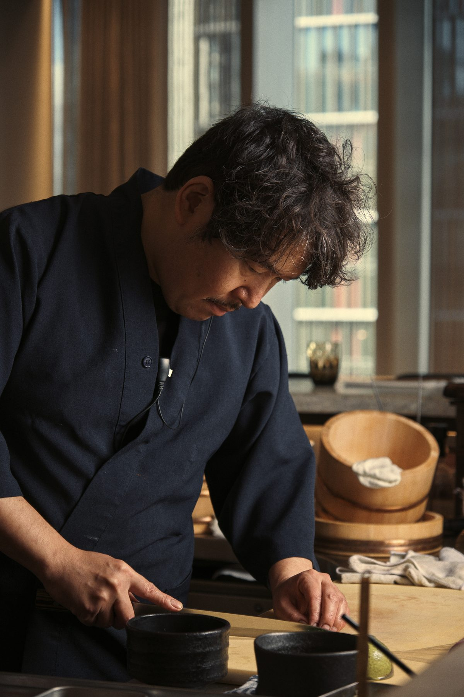
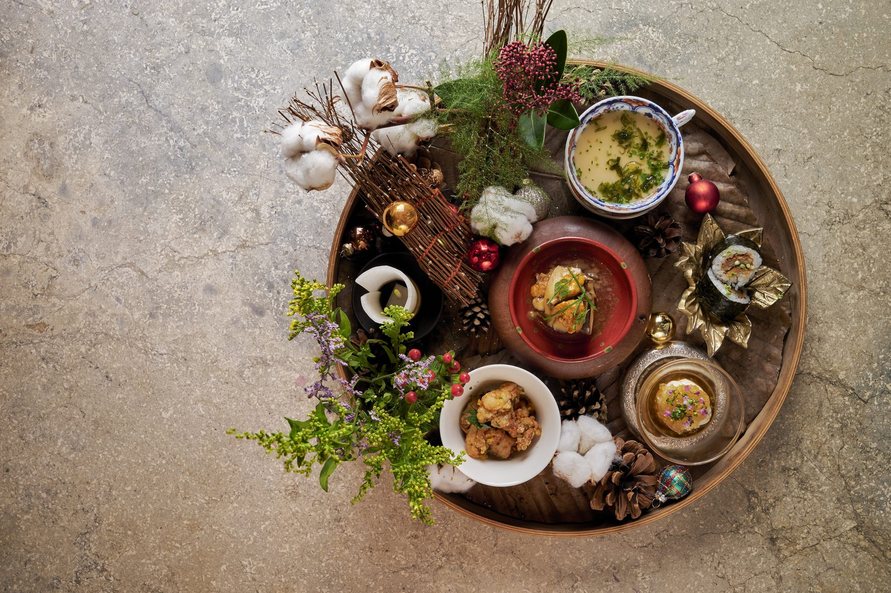
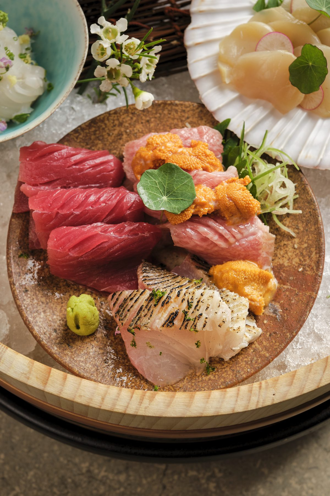
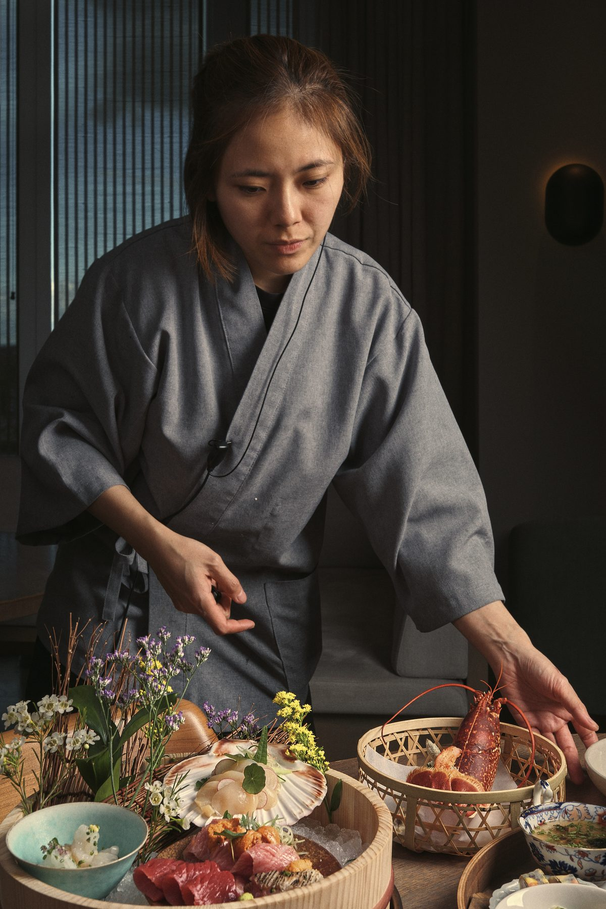
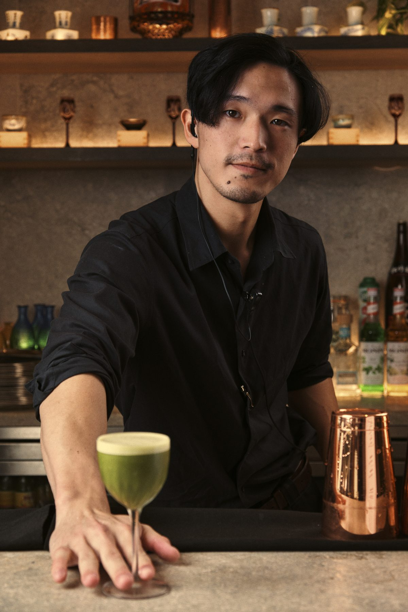
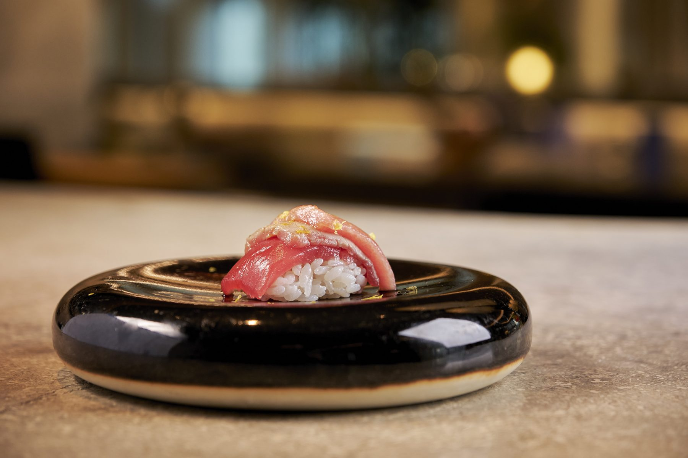
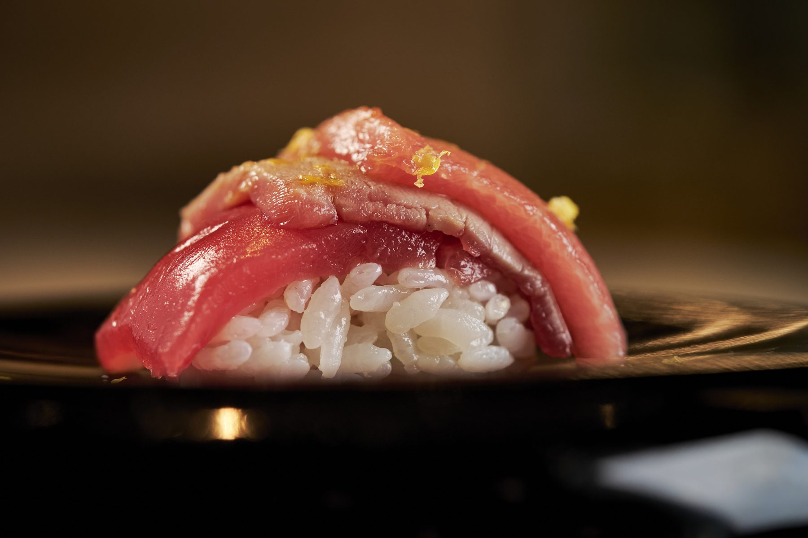

画 廊
The gallery
A visual record of the room, the fire, the knife, and the plate. Photography from the kitchen and the pass.
A visual record of the room, the fire, the knife, and the plate. Photography from the kitchen and the pass.














The photographs are only a fragment. The fire, the knife, the plate — best seen seven floors above Stratford, on any evening except Monday.
Reserve a table